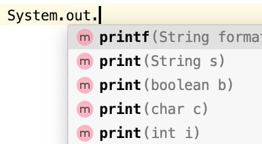
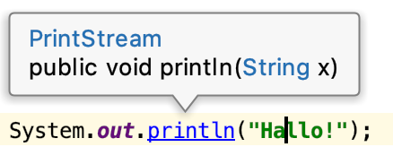
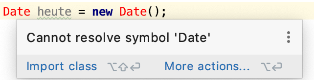
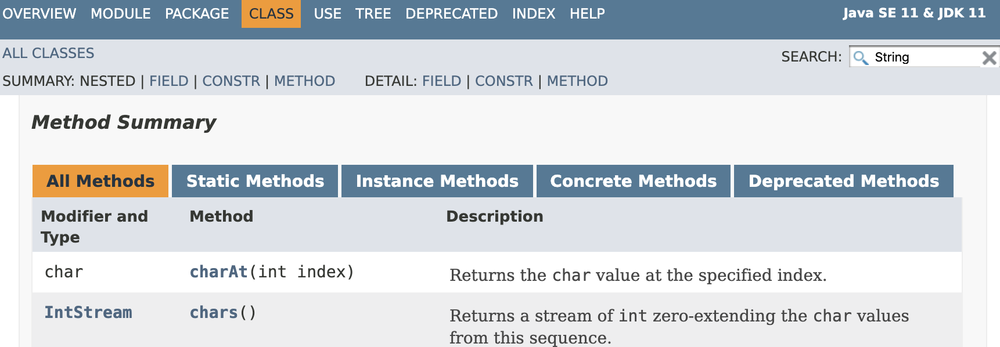

Prof. Dr.-Ing. Johannes Schildgen
johannes.schildgen@oth-regensburg.de
Programmieren 2 (Java)
Kapitel 1: Grundlagen
2020-03-25


Organisatorisches
Vorlesung (ab 2020-03-25)
- Mi, 15:15 Uhr (K015)
Übung (ab 2020-04-02)
- Jede Woche ein Übungsblatt; insgesamt 12 Stück
- Aufgabe 1 (gibt ab Blatt 3 jeweils 10 Punkte):
Abgabe online bis Mittwoch 12:00 Uhr - Weitere Aufgaben zum Lösen in der Übungsstunde
- Blatt 1 und 2: Online-Einzelsessions
Klausur
- Zulassungsvorraussetzung:
mind. 80 Punkte in der Übung - Schriftliche Klausur
- 90 Minuten Zeit
- Hilfsmittel: Handschriftlich
doppelseitig beschriebenes DIN-A4-Blatt
Literatur
- M. Kofler
Java - Der Grundkurs - C. Ullenboom
Java ist auch eine Insel - F. Jobst
Programmieren in Java
Aufbau der Vorlesung
- Java-Grundlagen
- Datentypen, if/while/for/...
- IntelliJ
Aufbau der Vorlesung
- Java-Grundlagen
- Datentypen, if/while/for/...
- IntelliJ
- Objekt-orientierte Programmierung
- Klassen, Interfaces, Objekte
Aufbau der Vorlesung
- Java-Grundlagen
- Datentypen, if/while/for/...
- IntelliJ
- Objekt-orientierte Programmierung
- Klassen, Interfaces, Objekte
- Vererbung
Aufbau der Vorlesung
- Java-Grundlagen
- Datentypen, if/while/for/...
- IntelliJ
- Objekt-orientierte Programmierung
- Klassen, Interfaces, Objekte
- Vererbung
- UML
Aufbau der Vorlesung
- Java-Grundlagen
- Datentypen, if/while/for/...
- IntelliJ
- Objekt-orientierte Programmierung
- Klassen, Interfaces, Objekte
- Vererbung
- UML
- Exceptions
- Generics und Collections
- Arrays, Listen, Mengen, Maps
Aufbau der Vorlesung
- Java-Grundlagen
- Datentypen, if/while/for/...
- IntelliJ
- Objekt-orientierte Programmierung
- Klassen, Interfaces, Objekte
- Vererbung
- UML
- Exceptions
- Generics und Collections
- Arrays, Listen, Mengen, Maps
- Lambda-Ausdrücke
Aufbau der Vorlesung
- Java-Grundlagen
- Datentypen, if/while/for/...
- IntelliJ
- Objekt-orientierte Programmierung
- Klassen, Interfaces, Objekte
- Vererbung
- UML
- Exceptions
- Generics und Collections
- Arrays, Listen, Mengen, Maps
- Lambda-Ausdrücke
- GUI-Programmierung mit JavaFX
Warum Java?
Warum Java?
- Plattformunabhängig
- Kostenlos und Open Source
- Vielseitig einsetzbar:
- Konsolenprogramme
- Grafische Benutzeroberflächen
- Web-Anwendungen
- Android-Apps
- ...
Komponenten von Java
Java Runtime Environment (JRE)
- Wird benötigt, um Java-Programme auszuführen
- Beinhaltet die Java Virtual Machine (JVM)
Java Development Kit (JDK)
- Beinhaltet Klassen und Tools, um Java zu entwickeln
- Beinhaltet auch das JRE
Beides ist verfügbar als Oracle Java und OpenJDK.
Zwei Tools: javac und java
javac - Der Java Compiler
- Eingabe: *.java-Dateien (Klassen-Quellcode)
- Ausgabe: *.class-Dateien (plattformunabh. Bytecode)
java - Starten einer Java-Anwendung
- Eingabe: Name einer Klasse
- Startet
main()-Methode in der gegebenen Klasse
$ javac MeinProgramm.java
$ ls
MeinProgramm.class MeinProgramm.java
$ java MeinProgramm
Hallo!
Beispiel-Programm
MeinProgramm.java
Wichtig: Der Dateiname muss gleich dem Klassennamen sein!
Java Shell jshell
$ jshell
| Welcome to JShell -- Version 13.0.1
| For an introduction type: /help intro
jshell> System.out.println("Nochmal hallo!");
Nochmal hallo!
jshell> 5+5
$2 ==> 10
jshell>
Kommando einlesen → ausführen → Kommando einlesen → ausführen → ...
IDE
Integrated Development Enviroments
IntelliJ, Eclipse, Netbeans, ...
- Kann viiiiel mehr als ein Texteditor
- Autovervollständigung
- Code-Generierung
- Versionsverwaltung
- Zeigt Warnungen und Fehler an
- Ausführung und Debugging des Programms
- ...
IntelliJ
IntelliJ
Nützliche Funktionen:
  - Autovervollständigung beim Tippen
- Infos und zum Code springen: Strg bzw. ⌘
- Code → Reformat Code
- Sauberes umbenennen:
Rechtsklick auf etwas → Refactor - Live-Templates mit Tab-Taste,
z. B.sout↹erzeugtSystem.out.println(); - Korrekturvorschläge annehmen:
Alt+Enter bzw. ⌥+↵
Java-Dokumentation
https://docs.oracle.com/en/java/javase/13/docs/api/
Viele Beispiele, Beschreibungen aller Methoden, uvm.
Sprachelemente
| Bezeichnung | Beschreibung | Beispiel | Namenskonvention |
|---|---|---|---|
| Kommentar | wird ignoriert | // Einzeiler/* oder so */ | - |
| Variable & Attribut | speichert Wert oder Objektref. | x, name, aktuelleKarte | Beginnt mit Kleinbuchstaben |
| Klasse | "Bauplan" für Objekte | String, Person | Beginnt mit Großbuchstaben |
| Methode | beschreibt Objektverhalten | println, getName | Beginnt mit Kleinbuchstaben |
| Konstanten | unveränderlich | SPRACHE | Alles groß |
| Enums | zulässige Werte | ROT, SCHWARZ | Alles groß |
Variablen
Variablen speichern einen Wert eines primitiven Datentypen oder die Referenz auf ein Objekt.
Jedes Java-Kommando muss mit einem Semikolon ; enden!
Welchen Wert hat nun die Variable "zahl"?
- 15
- 50
- 150
- 300
https://frage.space
Konstanten
final macht Variablen unveränderbar.
ANZAHL_SPIELER = 3; ← verboten!
Code-Blöcke
Der Gültigkeitsbereich von Variablen endet beim Abschluss desjenigen Code-Blocks, in dem sie deklariert wurden.
if / else if / else
Ternärer Operator ? :
bedingung ? dann_wert : sonst_wert
Die dritte Zeile des Beispiels entspricht dem Folgenden:
Was ist 1 > 2 ? 3 : 4?
- 1
- 2
- 3
- 4
https://frage.space
switch
while / do-while / for
Primitive Datentypen
boolean | true oder false |
byte | Ganze Zahl zwischen -127 und 128 (1 Byte) |
short | Ganze Zahl zwischen -32768 und 32767 (2 Byte) |
int | Ganze Zahl zwischen ca. -2 Mrd. und ca. 2 Mrd. (4 Byte) |
long | Ganze Zahl zwischen ca. -9 Trill. und ca. 9 Trill. (8 Byte) |
float | Fließkommazahl bis 8 Stellen (4 Byte) |
double | Fließkommazahl bis 16 Stellen (8 Byte) |
char | Ein Unicode-Zeichen |
Wrapper-Datentypen
Boolean | ... |
Byte | ... |
Short | ... |
Integer | ... |
Long | ... |
Float | ... |
Double | ... |
Character | ... |
Aufzählungstypen
Strings
Strings stehen in doppelten Anführungszeichen.
String.equals
Strings in Java sind immutable, das heißt ein String kann nicht verändert werden. Stattdessen wird ein neues String-Objekt erzeugt und seine Variable zeigt nun auf den neuen String.
NICHT (!!!) if(name == "Herr Peter Müller")
Objektreferenzen
String s = "Hallo";
String t = s;
Person p = new Person("Peter");
Person q = p;
Der Garbage Collector entfernt nicht mehr referenzierte Objekte aus dem Speicher.
s
t
p
q
String("Hallo")
Person("Peter")
2
2
Arrays
for-each-Schleife
Arrays
Arrays komplett ausgeben
Arrays klonen
Array sortieren
Was wäre, wenn man den Array nicht geklont, sondern einfach geschrieben hätte int[] lotto2 = lotto;?
- Keine Auswirkung
- Es kommt ein Fehler
- lotto2 wäre nicht sortiert
- lotto wäre auch sortiert
https://frage.space
Pakete / import
Jede Klasse (eigene Klassen, zur Java API gehörende Klassen, weitere verwendete Klassen) befindet sich in einem Paket.
Verwendung einer Klasse: paketname.Klasse
Paketname kann weggelassen werden ...
- ... für alle Klassen im Paket
java.lang(z. B.java.lang.String) - ... für alle Klassen im gleiche Paket wie die aktuelle Klasse
- ... für alle importierten Klassen
Textausgabe: System.out
Texteingabe: Scanner
Kapitelzusammenfassung
- Die Programmiersprache Java
- JRE, JDK,
javac,java, Java Shell - IntelliJ IDE
- Java-Dokumentation
- Variablen, Konstanten, primitive Datentypen
- Strings
- Arrays
- Textausgabe und Texteingabe